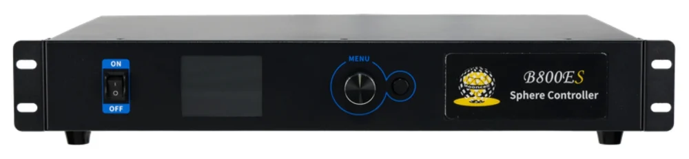

LED の形と画素数
球体・円形・リングなど、どんな形かと総画素数を先に確認します。目安は約 520 万画素までです。
映像をつなぐ・整える ↗EQUIPMENT
球体・異形 LED コントローラー
球体やリングなど、四角くない LED に 4K の映像を割り付ける。
KEY SPECIFICATIONS

画像を大きく見る ＋01 / ROLE & FLOW
実際の構成は案件に合わせて決めます。
02 / BEFORE YOUR BRIEF
球体・円形・リングなど、どんな形かと総画素数を先に確認します。目安は約 520 万画素までです。
四角い映像をどう球面に割り付けるかで、素材の作り方が変わります。制作側と早めに共有します。
出力は 1Gbps の LAN 8 系統。LED までの距離と配線の取り回しを図面で確かめます。
03 / CHOOSING THE RIGHT TOOL
展示会のシンボルや演出用の球体 LED、円形・リング状の LED 画面など、四角くない画面を 1 台で動かしたい現場に。
四角い LED 画面なら、Colorlight Z8t などの一般的な LED プロセッサーで足ります。形が特殊かどうか、画素数と入力の解像度から選び分けます。
B800ES は、球体・円形・リングなど四角くない LED 画面のための送信機(Sphere LED Controller)です。HDMI と DisplayPort の入力を備え、最大 3840×2160 @60Hz まで受けられます。出力は 1Gbps LAN 8 系統、ロード容量は約 520 万画素とされています。電源・消費電力・重量は資料によって表記が異なるため、手配の際にメーカー仕様書と機材の銘板で確認します。
出典：プラスゼロ Mooncell B800ES 製品ページ ↗（2026年11月10日照合）
日程・台数、設置場所と搬入経路、電源、担当範囲をお聞かせください。本体・周辺機材・搬入出・設営・本番操作・撤去を分けて、必要な範囲を整理します。